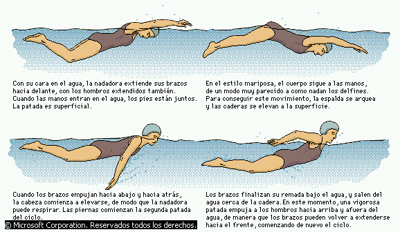
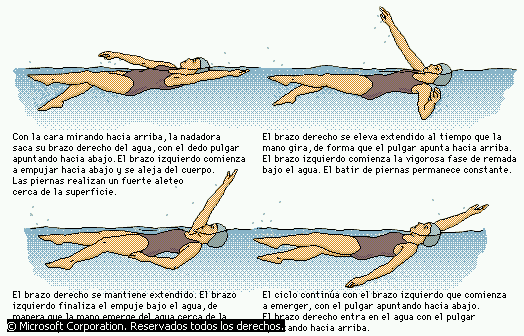

La tecnica y los diferentes estilos que podes encontrar
El principal obstáculo para aprender a nadar es
el miedo al agua o el nerviosismo, que produce tensión
muscular. Se ha avanzado mucho en el desarrollo de
métodos
para reducir esta barrera psicológica. A menudo se empieza
a enseñar a los niños desde muy pequeños.
Aunque es posible enseñar a personas de edad avanzada,
cuanto antes aprenda a nadar el individuo, más
fácil resulta. La enseñanza de la natación
es importante para aprender a coordinar los movimientos de manos
y piernas con la respiración. Su aprendizaje se ha
incorporado a los planes de estudio de los colegios en muchas
partes del mundo. Durante la II Guerra Mundial se
desarrollaron técnicas de enseñanza para grandes
grupos,
impartiéndose cursos para las
tropas como parte de su entrenamiento
para el combate.
Existen cinco estilos de natación reconocidos,
que se han ido perfeccionando desde finales del siglo XIX.
Éstos son: crol (también llamado estilo libre,
porque se puede elegir en las competiciones de estilo libre),
cuya primera versión la dio el nadador inglés
John Arthur Trudgen en la década de 1870; espalda, que lo
utilizó por primera vez el nadador estadounidense Harry
Hebner en los Juegos
Olímpicos de 1912; braza, el estilo más antiguo,
conocido desde el siglo XVII; mariposa, desarrollado en la
década de 1930 por Henry Myers y otros nadadores
estadounidenses y reconocido en la de 1950 como estilo
independiente, y brazada de costado, estilo básico en los
primeros años de competición, pero que hoy
sólo se utiliza en la natación no
competitiva.
Mariposa
En la variante de braza conocida como mariposa, ambos
brazos se llevan juntos al frente por encima del agua y luego
hacia atrás al mismo tiempo. El movimiento de los brazos
es continuo y siempre va acompañado de un movimiento
ondulante de las caderas. La patada, llamada de delfín, es
un movimiento descendente y brusco de los pies juntos.

Espalda
Este estilo es similar al crol, pero el nadador flota
con la espalda en el agua. La secuencia de movimientos es
alternativa: un brazo en el aire con la palma de la mano hacia
afuera saliendo de debajo de la pierna, mientras el otro impulsa
el cuerpo en el agua. También se utiliza aquí la
patada oscilante.

Pecho
En este estilo, el nadador flota boca abajo, con los
brazos apuntando al frente, las palmas vueltas, y ejecuta la
siguiente secuencia de movimientos horizontales: se abren los
brazos hacia atrás hasta quedar en línea con los
hombros, siempre encima o debajo de la superficie del agua. Se
encogen las piernas para aproximarlas al cuerpo, con las rodillas
y los dedos de los pies hacia afuera, y luego se estiran con un
impulso al tiempo que los
brazos vuelven al punto de partida, momento en el cual comienza
de nuevo todo el ciclo. El nadador exhala debajo del agua. Las
brazadas deben ser laterales, no verticales. Éste es un
punto muy importante y debatido en la natación de
competición.

Crol
En este estilo, uno de los brazos del nadador se mueve
en el aire con la palma
hacia abajo dispuesta a entrar en el agua, y el codo relajado,
mientras el otro brazo avanza bajo el agua. Las piernas se mueven
de acuerdo a lo que en los últimos años ha
evolucionado como patada oscilante, un movimiento
alternativo de las caderas arriba y abajo con las piernas
relajadas, los pies hacia adentro y los dedos en punta. Por cada
ciclo completo de brazos tienen lugar de dos a ocho patadas
oscilantes. En este estilo es muy importante respirar de modo
adecuado. Se puede tomar una respiración completa por cada ciclo de los
brazos, inhalando por la boca al girar la cabeza a un lado cuando
pasa el brazo y exhalando después bajo el agua cuando el
brazo avanza de nuevo.

Over
Tiene muchos usos en la natación no competitiva.
Es muy útil como técnica de salvamento.
Además, como no exige tanto esfuerzo físico como
otros estilos, es apropiado para largas distancias.
También es popular para la natación de recreo
porque la cabeza siempre permanece fuera del agua. El nadador
flota sobre uno de los dos costados de su cuerpo y mueve los
brazos alternativamente. El brazo que está debajo del agua
da impulso hasta la altura de la cabeza, asoma y vuelve a la
cintura; el brazo que está encima cruza la cintura y luego
da impulso otra vez hasta el pecho. Las piernas se abren despacio
y luego se contraen bruscamente, dando una patada de impulso,
tipo tijeras, antes de estirarse del todo.